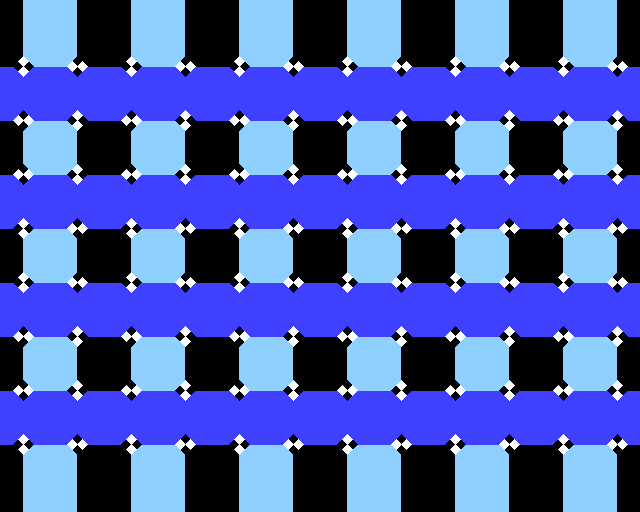
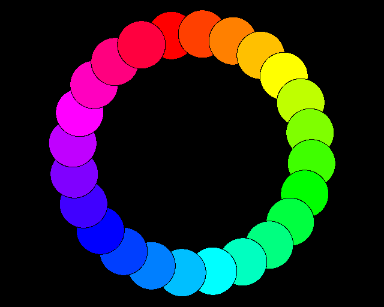
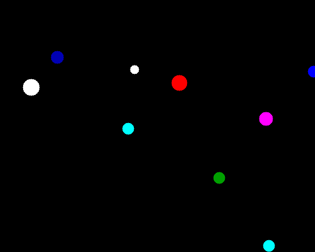

mini_basic
Python BASIC interpreter: multi-dialect (mini / bbc / mits / commodore / tiny), REPL/CLI, and file I/O. Regular 1.00 is text/console only.
CLI: python -m mini_basic · python mini_basic.py · mb.py (After a pip install: mini-basic / minibasic.)
Version: mini_basic/version.py (pre-release 1.0.0.dev0 until tagged).
Docs (HTML): open index.html at the clone root (pages are under docs/site/) — install · public tree · language
Install the interpreter from GitHub:
python -m pip install "mini-basic[repl] @ git+https://github.com/pyTony/mini_basic.git"
mini-basic --versionThis main branch is the lean release tree: the interpreter package, basics/ (small standalone programs), showcase/ (the demo reel below), and this handbook. The full development tree — examples/, test/, tools/, scripts/, documentation/, and the complete per-PR changelog — lives on the `dev` branch:
git clone -b dev https://github.com/pyTony/mini_basic.git # full dev tree
git clone https://github.com/pyTony/mini_basic.git # release tree (this branch)| On GitHub | What |
|---|---|
| basics/ | Small standalone .bas files |
| showcase/ | The 8-program demo reel (see below) |
| docs/ | Language / release notes |
| dev branch | Full dev tree: examples/, test/, tools/, scripts/, documentation/ |
Upstream (not this repo): garyexplains/BASIC-M6502-CPORT · rtrussell/BBCSDL examples
Quick start
python -m mini_basic basics/MB_COLOR.BAS
python -m mini_basic --dialect mits basics/ELIZA.BAS
python -m mini_basic --dialect bbc basics/BETH.BAS
python -m mini_basic --pygame --dialect bbc basics/mand_mode9_and.bas
python -m mini_basic --pygame --dialect bbc basics/jclock.bas
python -m mini_basicfrom mini_basic import BASICInterpreter, main
from mini_basic.config import InterpreterConfig
interp = BASICInterpreter(InterpreterConfig(dialect='bbc', display='none'))Showcase
Eight confirmed-working programs picked to span graphics, fractals, performance and language features. They live under showcase/ right here on main and run via showcase/demo_reel.py:
python showcase/demo_reel.py # run the whole reel
python showcase/demo_reel.py --list # just print what's in it| disco — colour lightshow, grid redraw + palette cycling |  illusion — cafe-wall optical illusion: a dead-straight grid looks bent, purely from alternating corner wedges at each intersection |  wheel — spinning colour ring;CASE/WHEN dispatch, CIRCLE discs, *REFRESH |
fern — Barnsley fern fractal via chained DRAW/affine steps | Mandel_ANSI — Mandelbrot set in ANSI colour, console only, renders in well under a second (the interpreter's perf highlight) |  bounce — nested structsPos{x,y}, whole-struct array copy, += on struct members |
| hanoi — Towers of Hanoi, solved and animated recursively (interactive: enter a disc count, press SPACE) | soccerball — spinning 3D ball via per-frame matrix rotation |
examples/ on the `dev` branch has ~30 more confirmed-working programs beyond this reel; see examples/README.txt there for the full tree.
Dialects (short)
| Dialect | Notes |
|---|---|
mini | Default; case-sensitive identifiers; keywords in any case (for i = 1 to 3 works) |
bbc | BBC-style; case-sensitive identifiers; keywords uppercase only |
mits / commodore / tiny | Classic-style case-folding |
Product conventions that trip people up:
- Use `MOD` for modulo (bare
%is integer-suffix / binary-literal syntax). - `SIN` / `COS` / `TAN` use radians unless you apply
DEG/RADhelpers. - Missing
IF … THEN <line>targets abort RUN after printing an IF error.
Layout
| Path | Purpose |
|---|---|
mini_basic/ | Package: runtime facade, mixins, display, REPL helpers |
mini_basic/runtime_parts/ | Mixin modules (core, program, expr, defs, execution, io, graphics, dialect) |
mini_basic/type_system.py | VarKind, BasicRuntimeError, frames / dataclasses |
basics/ | Small standalone BASIC programs |
showcase/ | 8-program demo reel + demo_reel.py launcher |
docs/site/ | Browsable HTML handbook |
The full dev tree (examples/, test/, tools/, scripts/, documentation/) lives on the `dev` branch.
Tests and development
Tests, dev tooling, and the git workflow docs live on the `dev` branch — test/, pytest.ini, GIT_QUICKSTART.md, DEVELOPMENT_GIT_USAGE.md. Check that branch out to run the test suite:
git clone -b dev https://github.com/pyTony/mini_basic.git
cd mini_basic
python -m pytest -q -m "phase1 and not slow" --timeout=45LLM / contributor notes: docs/site/LLM.html.
Import map
from mini_basic import BASICInterpreter, main
from mini_basic.config import InterpreterConfig, DEFAULT_CONFIG
from mini_basic.format import UsingFormatter
from mini_basic.expr import CompiledExpr, patternsPackage-level detail: mini_basic/README.md.